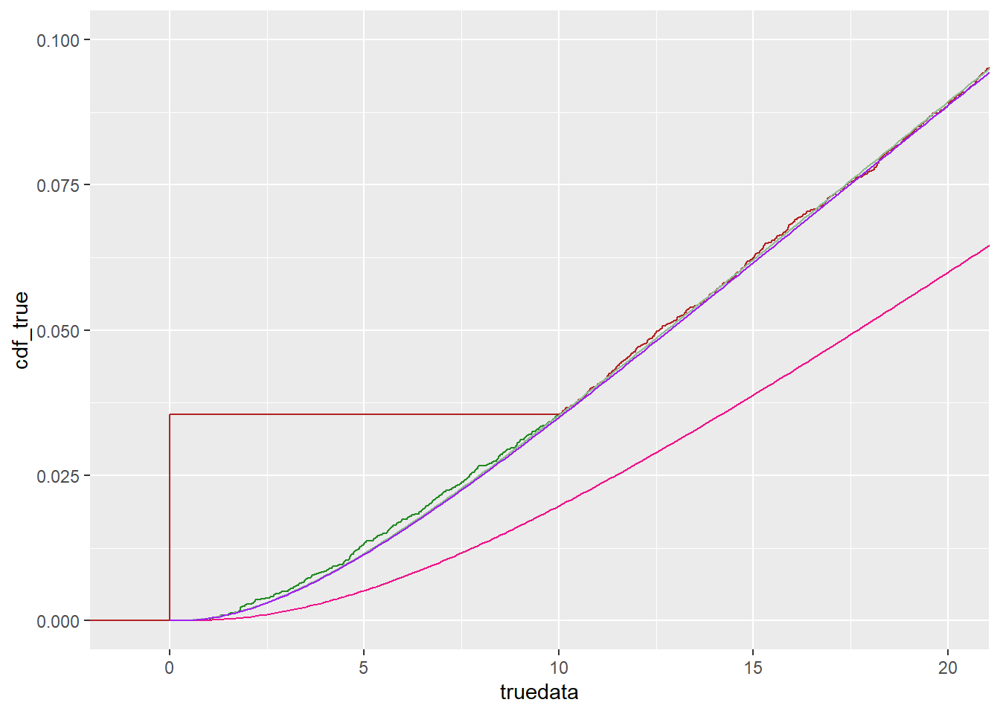
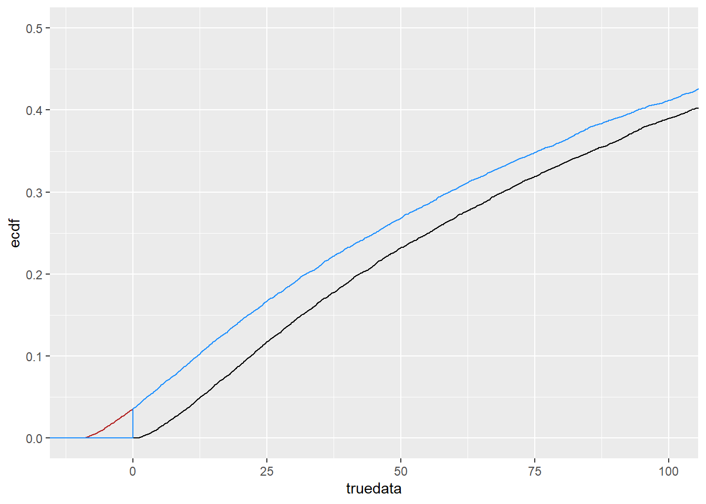

Warning: package 'fitdistrplus' was built under R version 4.2.3
Loading required package: MASS
Attaching package: 'MASS'
The following object is masked from 'package:dplyr':
select
Loading required package: survival
library(foreach)
Attaching package: 'foreach'
The following objects are masked from 'package:purrr':
accumulate, when
We have some data that has a lot of zeros in it, but is otherwise reasonably modelled by a lognormal. We want to be able to shift the distribution to change the number of zeros, and so we need to fit that lognormal, and then shift it around.
One way to think about the problem is that there is some detection limit or process limit below which we get zeros in the data, but where theoretically the distribution continues. Specifically, we’re dealing with water flow, and so maybe it drops below the ability of the gauges to detect, but continues dropping below that. It may even drop underground (e.g river is dry), but to some approximation, water remains underground, and the amount can continue dropping.
Thus, we want to take the data we have, and say that any zeros are actually some small but unknown number, and fit the distribution. We can identify the zero/undetectable threshold as the smallest nonzero number. Then, we can simulate new data with a shifted distribution, which will have a different number of points below that threshold.
Here, we want to figure out how to shift the data.
Generate data
Make the ‘true’ data
truedata <-rlnorm(10000, 5, 1.5)
Set the detection limit. Making this a variable since we need it in a few places and might want to change it.
ggplot() +stat_ecdf(data = tc, mapping =aes(x = truedata), color ='forestgreen') +stat_ecdf(data = tc, mapping =aes(x = censdata), color ='firebrick') +geom_line(data = df_cdf, mapping =aes(x = x, y = cdf_true), color ='darkseagreen') +geom_line(data = df_cdf, mapping =aes(x = x, y = cdf_cens), color ='deeppink2') +coord_cartesian(xlim =c(-1, 2*detectionlimit), ylim =c(0, 0.1))
The empirical cdfs fit exactly after 10, because of the probability mass at 0 for the censored data. The fitted distributions are clearly very good for the true data, but quite a ways off for the censored.
Censored fit
We should be able to use fitdistrplus::fitdistcens, though we need some weird data manipulation. Our data is either left-censored or true. From the help, left should be NA for left-censored, or observed for non-censored, and right should be the right bound of the interval for interval-censored or the data for non-censored. I think that means we set it to the detection limit for the censored observations- e.g. it’s the right bound of a censoring interval from -infinity to detection limit. But the interval censoring is confusing me.
Now, fit that. There’s a bug where an internal error check fails for tibbles, so send it an old-fashioned df. (it asks for length(censdata[,1]), which is the length of the vector for data.frames, but because indexing remains a tibble, fails for tibbles).
ggplot() +stat_ecdf(data = tc, mapping =aes(x = truedata), color ='forestgreen') +stat_ecdf(data = tc, mapping =aes(x = censdata), color ='firebrick') +geom_line(data = df_cdf, mapping =aes(x = x, y = cdf_true), color ='darkseagreen') +geom_line(data = df_cdf, mapping =aes(x = x, y = cdf_cens), color ='deeppink2') +geom_line(data = df_cdf, mapping =aes(x = x, y = cdf_cens2), color ='purple') +coord_cartesian(xlim =c(-1, 2*detectionlimit), ylim =c(0, 0.1))

Shifted to censor
The above is working, but when I go to apply it, there’s a slightly different issue. The data above is still bounded by 0, we’re just saying we can’t see it below some limit. And so the censored fitting allows us to fill in that bit of distribution between 0 and the limit.
The issue I actually encounter with my real data is that it looks like the curve simply cuts off at zero, but should go below. In other words, it looks like this:
ggplot(tc) +stat_ecdf(mapping =aes(x = shiftdata), color ='grey80') +stat_ecdf(mapping =aes(x = shiftcens), color ='black') +stat_ecdf(mapping =aes(x = truedata), color ='forestgreen') +stat_ecdf(mapping =aes(x = censdata), color ='firebrick') +coord_cartesian(xlim =c(-detectionlimit-1, 10*detectionlimit), ylim =c(0, 0.5))
So, it looks like the same problem, but we run into problems when we try to fit it. Because any function we try to fit will still be bounded by 0, not allow some unknown pseudo-tail to go lower than 0.
Fit it. where do we put the detection limit in this case? It shouldn’t be the same as above, necessarily, because we do have numbers between 0 and 10 (or whatever it is). I’ll choose 1, but even that’s arbitrary. Changing the left to NA anything less than whatever that value is so we don’t have a few numbers and then the spike.
ggplot() +stat_ecdf(data = tc, mapping =aes(x = truedata), color ='forestgreen') +stat_ecdf(data = tc, mapping =aes(x = censdata), color ='firebrick') +stat_ecdf(data = tc, mapping =aes(x = shiftcens), color ='black') +geom_line(data = df_cdf, mapping =aes(x = x, y = cdf_true), color ='darkseagreen') +geom_line(data = df_cdf, mapping =aes(x = x, y = cdf_cens), color ='deeppink2') +geom_line(data = df_cdf, mapping =aes(x = x, y = cdf_cens2),color ='purple') +geom_line(data = df_cdf, mapping =aes(x = x, y = cdf_censshift),color ='magenta') +coord_cartesian(xlim =c(-1, 2*detectionlimit), ylim =c(0, 0.1))
We can see that the magenta line is a terrible fit, because it is trying to fit an actual lognormal, which is necessarily bound by 0.
So, we want to find a way to fit the bit of the lognormal we have, assuming that some portion has gone below 0.
Shift the distribution
This approach exactly parallels how we created the dummy data- we shift the distribution up some amount, call that the detection limit, and fit (and then shift the fit back down). Let’s first do that for the case we know should work- exactly mirroring the shift we used to create the data. Assuming that works, we’ll need to then explore the situation where we don’t know how far to shift.
This is a bit silly, because we are just recovering the test data, but to make the process clear (and retain the zeros in shiftcens), we create a shifted version of it. This should match the censored true data censdata for this precise re-shift, with the slight change in the location of the initial probability mass.
Now, we fit that shifted data. We’re back to censoring at the detectionlimit (or whatever the shift back is). Now, instead of a mass at 0, all that mass gets pushed to detectonlimit (e.g. min(tc$shiftcensback) is 10, not 0). So we have to use that as the censoring value.
Fitting of the distribution ' lnorm ' on censored data by maximum likelihood
Parameters:
estimate
meanlog 5.026718
sdlog 1.497242
That is the same as fit_cens2, which we know works. Plot to double check. Need to add to df_cdf. And make a shifted x that we can use to re-backshift the new cdf. If that makes any sense.
Now, cdf_censshiftback should match the shifted-up distribution, and shifting it back down should match the ‘original’ distribution that looks like it should go below 0.
ggplot() +stat_ecdf(data = tc, mapping =aes(x = censdata), color ='firebrick') +stat_ecdf(data = tc, mapping =aes(x = shiftcens), color ='black') +stat_ecdf(data = tc, mapping =aes(x = shiftcensback), color ='cyan', linetype =2) +geom_line(data = df_cdf, mapping =aes(x = x, y = cdf_censshiftback), color ='deeppink2') +geom_line(data = df_cdf, mapping =aes(x = x, y = cdf_censshift),color ='magenta') +geom_line(data = df_cdf, mapping =aes(x = x_shiftback, y = cdf_censshiftback),color ='dodgerblue') +coord_cartesian(xlim =c(-1, 2*detectionlimit), ylim =c(0, 0.1))
So, that seems to be working. Now, though, what if we don’t know how much to shift? E.g. we’ll have data with no obvious ‘true’ shift. Can we just shift it way off to make sure the cdf hits zero, and then shift it back?
I think at this point I probably need to use a clean dataframe and set of variables- detectionlimit doesn’t really mean the same thing as ‘arbitrary shift’.
Unknown shift
I’m going to start all the way back at the beginning with a clean set of truedata and then shift it.
ggplot(df_shift) +stat_ecdf(aes(x = truedata), color ='black') +stat_ecdf(aes(x = shiftdata), color ='firebrick') +stat_ecdf(aes(x = shiftcens), color ='dodgerblue') +coord_cartesian(xlim =c(-10, 100), ylim =c(0, 0.5))

SO, the blue line there (shiftcens) is what we think we have for the real data. We know from above that it works to fit it if we bump it back up by exactly what we bumped down to make it, because, unsurprisingly, it becomes exactly what it was.
So the question now is, can we shift that blue line back up some arbitrary amount (as long as it’s greater than the downshift), and still recover the distribution?
Write a function and loop to look at this over some range of shifts and clean up the dataframe.
shiftfun <-function(indata, upshift) {# Shift the data shiftdf <-tibble(clipped = indata, shiftdat = indata + upshift, upshift)# Create censored dataset and fit# Handle the zero case- we just use the next value upif (upshift ==0) {rightlim <-min(indata[indata>0])} else {rightlim <- upshift} upcens <- shiftdf |> dplyr::mutate(left =ifelse(shiftdat <= upshift, NA, shiftdat),right =ifelse(shiftdat <= upshift, rightlim, shiftdat)) |> dplyr::select(left, right) fit_up <-fitdistcens(censdata =data.frame(upcens), distr ='lnorm')# This isn't ideal, but we can shove the cdf on here too, it just has rows that don't mean the same thing. prevents us saving a list though. shiftdf <- shiftdf |>mutate(x =row_number()/10,cdf_up =plnorm(x, fit_up$estimate['meanlog'], fit_up$estimate['sdlog']),pdf_up =dlnorm(x, fit_up$estimate['meanlog'], fit_up$estimate['sdlog']),# Some diagnosticsfitloglik = fit_up$loglik,fitsemean = fit_up$sd['meanlog'],fitsesd = fit_up$sd['sdlog'])}
Loop over a few values of the shift, from as-is, below true, true, and above true. Indata is the dummy for the data we actually have (ending at 0, but too high). Here, it’s in df_shift$shiftcens.
So, unsurprisingly, the thing to do is maximise log-likelihood. I could probably figure out a way to include a shift in the main function and use whatever the optimiser is doing internally.
Or, I can use optim on the output?
indata <- df_shift$shiftcensshiftoptim <-function(upshift) {# Shift the data shiftdf <-tibble(clipped = indata, shiftdat = indata + upshift, upshift)# Create censored dataset and fit# Handle the zero case- we just use the next value upif (upshift ==0) {rightlim <-min(indata[indata>0])} else {rightlim <- upshift} upcens <- shiftdf |> dplyr::mutate(left =ifelse(shiftdat <= upshift, NA, shiftdat),right =ifelse(shiftdat <= upshift, rightlim, shiftdat)) |> dplyr::select(left, right)suppressWarnings(fit_up <-fitdistcens(censdata =data.frame(upcens), distr ='lnorm'))return(-fit_up$loglik)}
This says to use optimize
optim(1, shiftoptim)
Warning in optim(1, shiftoptim): one-dimensional optimization by Nelder-Mead is unreliable:
use "Brent" or optimize() directly
$par
[1] 11.125
$value
[1] 67693.8
$counts
function gradient
28 NA
$convergence
[1] 0
$message
NULL
optimize(shiftoptim, interval =c(0, 1000))
$minimum
[1] 11.1132
$objective
[1] 67693.8
Let’s write a version that takes the data, then optimizes to get the right upshift.
fitshift <-function(rawdata, shift_up) {# Handle the zero case- we just use the next value upif (shift_up ==0) {rightlim <-min(rawdata[rawdata>0]) } else { rightlim <- shift_up} inshift <- rawdata + shift_up upcens <-tibble(left =ifelse(inshift <= shift_up, NA, inshift),right =ifelse(inshift <= shift_up, rightlim, inshift))suppressWarnings(fit_up <-fitdistcens(censdata =data.frame(upcens),distr ='lnorm'))return(fit_up)}opt_up <-function(shift_up, rawdata) { fit_up <-fitshift(rawdata, shift_up)return(-fit_up$loglik)}optshift <-function(rawdata) {# get the optimal shift shift <-optimize(opt_up, interval =c(0, 1000), rawdata = rawdata)# Get the fit at that shift (would be nice to kick this out of opt_up somehow) fit_up <-fitshift(rawdata, shift$minimum)# Create a df for output# The shifted data shiftdf <-tibble(orig_data = rawdata, shift_data = rawdata + shift$minimum, optimum_shift = shift$minimum)# This isn't ideal, but we can shove the cdf on here too, it just has rows that don't mean the same thing. prevents us saving a list though. shiftdf <- shiftdf |>mutate(x =row_number()/10,cdf_up =plnorm(x, fit_up$estimate['meanlog'], fit_up$estimate['sdlog']),pdf_up =dlnorm(x, fit_up$estimate['meanlog'], fit_up$estimate['sdlog']),# Some diagnosticsfitloglik = fit_up$loglik)# and a shifted-back version of the cdf/pdf just needs a shifted x. The# backshift of the data is just the original `rawdata`. shiftdf <- shiftdf |>mutate(x_back = x-shift$minimum)}
optimal_fit <-optshift(df_shift$shiftcens)
That’s not exactly 10, but is it close? The CDF looks pretty good.